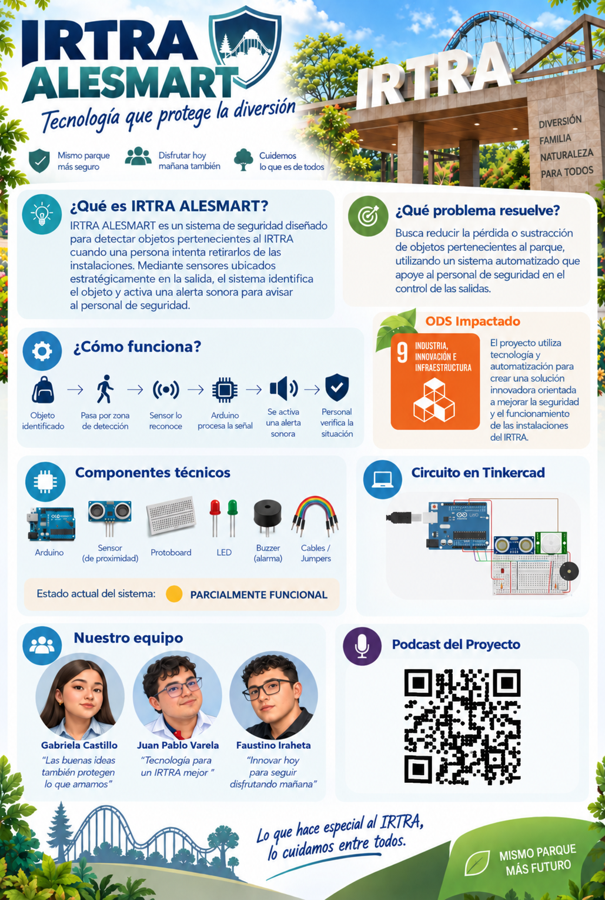

Situación de riesgo
La proximidad y el movimiento ocurren al mismo tiempo alrededor del objeto protegido.
PROYECTO FINAL DE TICS
Sistema automatizado de alerta para la protección de objetos mediante detección de distancia y movimiento.
Un prototipo educativo desarrollado con Arduino y Tinkercad que combina sensores, una alerta visual y una alarma sonora.
OBJETO PROTEGIDO
01 / PROBLEMÁTICA
Los parques recreativos utilizan mobiliario, equipos y otros recursos que deben permanecer dentro de las áreas autorizadas.
IRTRA ALESMART plantea un escenario preventivo para demostrar cómo un circuito puede advertir cuando una persona se aproxima a un objeto protegido y existe movimiento en la zona vigilada.
La proximidad y el movimiento ocurren al mismo tiempo alrededor del objeto protegido.
02 / SOLUCIÓN
El sistema compara la medición con un límite de 60 centímetros.
Una segunda entrada comprueba si existe actividad en la zona.
Se enciende cuando la distancia es igual o menor de 60 cm.
Suena cuando coinciden proximidad y movimiento.
03 / FUNCIONAMIENTO
Si la distancia es mayor de 60 cm, el LED y el piezoeléctrico permanecen apagados.
Si la distancia es de 60 cm o menos, el Arduino enciende el LED rojo.
Si además se detecta movimiento, el piezoeléctrico también se activa.
75 CM
DISTANCIA ZONA SEGURA
MOVIMIENTO NO DETECTADO
ALARMA INACTIVA
04 / ARCHIVOS DEL PROYECTO
DOCUMENTO WORD
Documento completo del proyecto, sus fundamentos, funcionamiento, pruebas y referencias.
Descargar ALESMART.docxVIDEO DEMOSTRATIVO
INFOGRAFÍA VISUAL

Ver en tamaño completo ↗05 / TECNOLOGÍA
Unidad de control que recibe las entradas y activa las salidas.
Plataforma utilizada para construir, programar y probar el circuito.
Mide la proximidad con respecto al umbral establecido.
Detecta actividad dentro del área observada.
Genera la advertencia visual cuando se alcanza el rango de alerta.
Produce la alarma sonora cuando también existe movimiento.
06 / EQUIPO
Integrante
Integrante
Integrante
COLEGIO CAPOUILLIEZ · UNDÉCIMO F · PROYECTO FINAL DE TICS